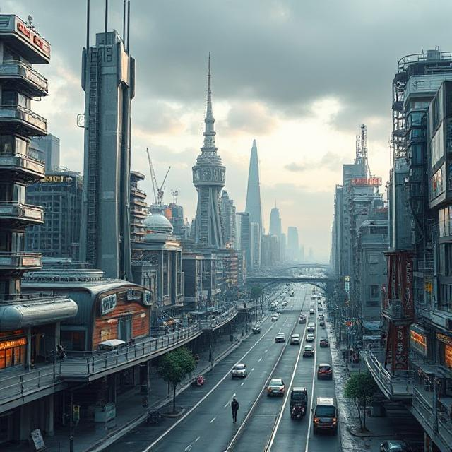
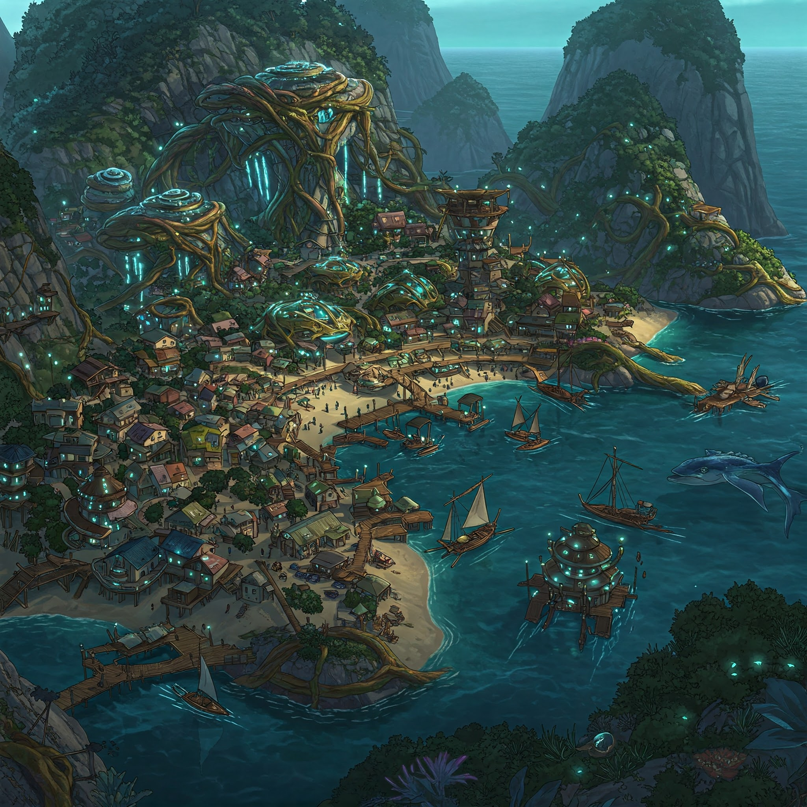

Fantasia

A world comprised of four regions, each supporting a resource and group of people that make the environment prosper.

Bayridge
Futuristic AI-City
Where Bob resides and changes lives with his tech work

Ray Cove
Fishing and Diving Seaside-Village
Where Mae resides, diving for deep sea crystals

Willow Rapids
A mystical tree community
Where Kassandra resides, reading fortunes and seeing futures

Misty Fields
A wind-swept field
Where Floradessa lives, uplifting spirits with her baking